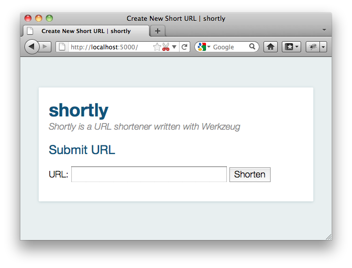

1. Werkzeug Tutorial¶
Welcome to the Werkzeug tutorial in which we will create a TinyURL clone that stores URLs in a redis instance. The libraries we will use for this applications are Jinja 2 for the templates, redis for the database layer and, of course, Werkzeug for the WSGI layer.
You can use pip to install the required libraries:
pip install Jinja2 redis Werkzeug
Also make sure to have a redis server running on your local machine. If you are on OS X, you can use brew to install it:
brew install redis
If you are on Ubuntu or Debian, you can use apt-get:
sudo apt-get install redis-server
Redis was developed for UNIX systems and was never really designed to work on Windows. For development purposes, the unofficial ports however work well enough. You can get them from github.
1.1. Introducing Shortly¶
In this tutorial, we will together create a simple URL shortener service with Werkzeug. Please keep in mind that Werkzeug is not a framework, it’s a library with utilities to create your own framework or application and as such is very flexible. The approach we use here is just one of many you can use.
As data store, we will use redis here instead of a relational database to keep this simple and because that’s the kind of job that redis excels at.
The final result will look something like this:
1.2. Step 0: A Basic WSGI Introduction¶
Werkzeug is a utility library for WSGI. WSGI itself is a protocol or convention that ensures that your web application can speak with the webserver and more importantly that web applications work nicely together.
A basic “Hello World” application in WSGI without the help of Werkzeug looks like this:
def application(environ, start_response):
start_response('200 OK', [('Content-Type', 'text/plain')])
return ['Hello World!']
A WSGI application is something you can call and pass an environ dict
and a start_response callable. The environ contains all incoming
information, the start_response function can be used to indicate the
start of the response. With Werkzeug you don’t have to deal directly with
either as request and response objects are provided to work with them.
The request data takes the environ object and allows you to access the data from that environ in a nice manner. The response object is a WSGI application in itself and provides a much nicer way to create responses.
Here is how you would write that application with response objects:
from werkzeug.wrappers import Response
def application(environ, start_response):
response = Response('Hello World!', mimetype='text/plain')
return response(environ, start_response)
And here an expanded version that looks at the query string in the URL (more importantly at the name parameter in the URL to substitute “World” against another word):
from werkzeug.wrappers import Request, Response
def application(environ, start_response):
request = Request(environ)
text = 'Hello %s!' % request.args.get('name', 'World')
response = Response(text, mimetype='text/plain')
return response(environ, start_response)
And that’s all you need to know about WSGI.
1.3. Step 1: Creating the Folders¶
Before we get started, let’s create the folders needed for this application:
/shortly
/static
/templates
The shortly folder is not a python package, but just something where we drop our files. Directly into this folder we will then put our main module in the following steps. The files inside the static folder are available to users of the application via HTTP. This is the place where CSS and JavaScript files go. Inside the templates folder we will make Jinja2 look for templates. The templates you create later in the tutorial will go in this directory.
1.4. Step 2: The Base Structure¶
Now let’s get right into it and create a module for our application. Let’s create a file called shortly.py in the shortly folder. At first we will need a bunch of imports. I will pull in all the imports here, even if they are not used right away, to keep it from being confusing:
import os
import redis
import urlparse
from werkzeug.wrappers import Request, Response
from werkzeug.routing import Map, Rule
from werkzeug.exceptions import HTTPException, NotFound
from werkzeug.wsgi import SharedDataMiddleware
from werkzeug.utils import redirect
from jinja2 import Environment, FileSystemLoader
Then we can create the basic structure for our application and a function to create a new instance of it, optionally with a piece of WSGI middleware that exports all the files on the static folder on the web:
class Shortly(object):
def __init__(self, config):
self.redis = redis.Redis(config['redis_host'], config['redis_port'])
def dispatch_request(self, request):
return Response('Hello World!')
def wsgi_app(self, environ, start_response):
request = Request(environ)
response = self.dispatch_request(request)
return response(environ, start_response)
def __call__(self, environ, start_response):
return self.wsgi_app(environ, start_response)
def create_app(redis_host='localhost', redis_port=6379, with_static=True):
app = Shortly({
'redis_host': redis_host,
'redis_port': redis_port
})
if with_static:
app.wsgi_app = SharedDataMiddleware(app.wsgi_app, {
'/static': os.path.join(os.path.dirname(__file__), 'static')
})
return app
Lastly we can add a piece of code that will start a local development server with automatic code reloading and a debugger:
if __name__ == '__main__':
from werkzeug.serving import run_simple
app = create_app()
run_simple('127.0.0.1', 5000, app, use_debugger=True, use_reloader=True)
The basic idea here is that our Shortly class is an actual WSGI
application. The __call__ method directly dispatches to wsgi_app.
This is done so that we can wrap wsgi_app to apply middlewares like we
do in the create_app function. The actual wsgi_app method then
creates a Request object and calls the dispatch_request
method which then has to return a Response object which is then
evaluated as WSGI application again. As you can see: turtles all the way
down. Both the Shortly class we create, as well as any request object
in Werkzeug implements the WSGI interface. As a result of that you could
even return another WSGI application from the dispatch_request method.
The create_app factory function can be used to create a new instance
of our application. Not only will it pass some parameters as
configuration to the application but also optionally add a WSGI middleware
that exports static files. This way we have access to the files from the
static folder even when we are not configuring our server to provide them
which is very helpful for development.
1.5. Intermezzo: Running the Application¶
Now you should be able to execute the file with python and see a server on your local machine:
$ python shortly.py
* Running on http://127.0.0.1:5000/
* Restarting with reloader: stat() polling
It also tells you that the reloader is active. It will use various techniques to figure out if any file changed on the disk and then automatically restart.
Just go to the URL and you should see “Hello World!”.
1.6. Step 3: The Environment¶
Now that we have the basic application class, we can make the constructor do something useful and provide a few helpers on there that can come in handy. We will need to be able to render templates and connect to redis, so let’s extend the class a bit:
def __init__(self, config):
self.redis = redis.Redis(config['redis_host'], config['redis_port'])
template_path = os.path.join(os.path.dirname(__file__), 'templates')
self.jinja_env = Environment(loader=FileSystemLoader(template_path),
autoescape=True)
def render_template(self, template_name, **context):
t = self.jinja_env.get_template(template_name)
return Response(t.render(context), mimetype='text/html')
1.7. Step 4: The Routing¶
Next up is routing. Routing is the process of matching and parsing the URL to
something we can use. Werkzeug provides a flexible integrated routing
system which we can use for that. The way it works is that you create a
Map instance and add a bunch of
Rule objects. Each rule has a pattern it will
try to match the URL against and an “endpoint”. The endpoint is typically
a string and can be used to uniquely identify the URL. We could also use
this to automatically reverse the URL, but that’s not what we will do in this
tutorial.
Just put this into the constructor:
self.url_map = Map([
Rule('/', endpoint='new_url'),
Rule('/<short_id>', endpoint='follow_short_link'),
Rule('/<short_id>+', endpoint='short_link_details')
])
Here we create a URL map with three rules. / for the root of the URL
space where we will just dispatch to a function that implements the logic
to create a new URL. And then one that follows the short link to the
target URL and another one with the same rule but a plus (+) at the
end to show the link details.
So how do we find our way from the endpoint to a function? That’s up to you.
The way we will do it in this tutorial is by calling the method on_
+ endpoint on the class itself. Here is how this works:
def dispatch_request(self, request):
adapter = self.url_map.bind_to_environ(request.environ)
try:
endpoint, values = adapter.match()
return getattr(self, 'on_' + endpoint)(request, **values)
except HTTPException, e:
return e
We bind the URL map to the current environment and get back a
URLAdapter. The adapter can be used to match
the request but also to reverse URLs. The match method will return the
endpoint and a dictionary of values in the URL. For instance the rule for
follow_short_link has a variable part called short_id. When we go
to http://localhost:5000/foo we will get the following values back:
endpoint = 'follow_short_link'
values = {'short_id': u'foo'}
If it does not match anything, it will raise a
NotFound exception, which is an
HTTPException. All HTTP exceptions are also
WSGI applications by themselves which render a default error page. So we
just catch all of them down and return the error itself.
If all works well, we call the function on_ + endpoint and pass it the
request as argument as well as all the URL arguments as keyword arguments
and return the response object that method returns.
1.8. Step 5: The First View¶
Let’s start with the first view: the one for new URLs:
def on_new_url(self, request):
error = None
url = ''
if request.method == 'POST':
url = request.form['url']
if not is_valid_url(url):
error = 'Please enter a valid URL'
else:
short_id = self.insert_url(url)
return redirect('/%s+' % short_id)
return self.render_template('new_url.html', error=error, url=url)
This logic should be easy to understand. Basically we are checking that the request method is POST, in which case we validate the URL and add a new entry to the database, then redirect to the detail page. This means we need to write a function and a helper method. For URL validation this is good enough:
def is_valid_url(url):
parts = urlparse.urlparse(url)
return parts.scheme in ('http', 'https')
For inserting the URL, all we need is this little method on our class:
def insert_url(self, url):
short_id = self.redis.get('reverse-url:' + url)
if short_id is not None:
return short_id
url_num = self.redis.incr('last-url-id')
short_id = base36_encode(url_num)
self.redis.set('url-target:' + short_id, url)
self.redis.set('reverse-url:' + url, short_id)
return short_id
reverse-url: + the URL will store the short id. If the URL was
already submitted this won’t be None and we can just return that value
which will be the short ID. Otherwise we increment the last-url-id
key and convert it to base36. Then we store the link and the reverse
entry in redis. And here the function to convert to base 36:
def base36_encode(number):
assert number >= 0, 'positive integer required'
if number == 0:
return '0'
base36 = []
while number != 0:
number, i = divmod(number, 36)
base36.append('0123456789abcdefghijklmnopqrstuvwxyz'[i])
return ''.join(reversed(base36))
So what is missing for this view to work is the template. We will create this later, let’s first also write the other views and then do the templates in one go.
1.9. Step 6: Redirect View¶
The redirect view is easy. All it has to do is to look for the link in redis and redirect to it. Additionally we will also increment a counter so that we know how often a link was clicked:
def on_follow_short_link(self, request, short_id):
link_target = self.redis.get('url-target:' + short_id)
if link_target is None:
raise NotFound()
self.redis.incr('click-count:' + short_id)
return redirect(link_target)
In this case we will raise a NotFound exception
by hand if the URL does not exist, which will bubble up to the
dispatch_request function and be converted into a default 404
response.
1.10. Step 7: Detail View¶
The link detail view is very similar, we just render a template again. In addition to looking up the target, we also ask redis for the number of times the link was clicked and let it default to zero if such a key does not yet exist:
def on_short_link_details(self, request, short_id):
link_target = self.redis.get('url-target:' + short_id)
if link_target is None:
raise NotFound()
click_count = int(self.redis.get('click-count:' + short_id) or 0)
return self.render_template('short_link_details.html',
link_target=link_target,
short_id=short_id,
click_count=click_count
)
Please be aware that redis always works with strings, so you have to convert
the click count to int by hand.
1.11. Step 8: Templates¶
And here are all the templates. Just drop them into the templates folder. Jinja2 supports template inheritance, so the first thing we will do is create a layout template with blocks that act as placeholders. We also set up Jinja2 so that it automatically escapes strings with HTML rules, so we don’t have to spend time on that ourselves. This prevents XSS attacks and rendering errors.
layout.html:
<!doctype html>
<title>{% block title %}{% endblock %} | shortly</title>
<link rel=stylesheet href=/static/style.css type=text/css>
<div class=box>
<h1><a href=/>shortly</a></h1>
<p class=tagline>Shortly is a URL shortener written with Werkzeug
{% block body %}{% endblock %}
</div>
new_url.html:
{% extends "layout.html" %}
{% block title %}Create New Short URL{% endblock %}
{% block body %}
<h2>Submit URL</h2>
<form action="" method=post>
{% if error %}
<p class=error><strong>Error:</strong> {{ error }}
{% endif %}
<p>URL:
<input type=text name=url value="{{ url }}" class=urlinput>
<input type=submit value="Shorten">
</form>
{% endblock %}
short_link_details.html:
{% extends "layout.html" %}
{% block title %}Details about /{{ short_id }}{% endblock %}
{% block body %}
<h2><a href="/{{ short_id }}">/{{ short_id }}</a></h2>
<dl>
<dt>Full link
<dd class=link><div>{{ link_target }}</div>
<dt>Click count:
<dd>{{ click_count }}
</dl>
{% endblock %}
1.12. Step 9: The Style¶
For this to look better than ugly black and white, here a simple stylesheet that goes along:
body { background: #E8EFF0; margin: 0; padding: 0; }
body, input { font-family: 'Helvetica Neue', Arial,
sans-serif; font-weight: 300; font-size: 18px; }
.box { width: 500px; margin: 60px auto; padding: 20px;
background: white; box-shadow: 0 1px 4px #BED1D4;
border-radius: 2px; }
a { color: #11557C; }
h1, h2 { margin: 0; color: #11557C; }
h1 a { text-decoration: none; }
h2 { font-weight: normal; font-size: 24px; }
.tagline { color: #888; font-style: italic; margin: 0 0 20px 0; }
.link div { overflow: auto; font-size: 0.8em; white-space: pre;
padding: 4px 10px; margin: 5px 0; background: #E5EAF1; }
dt { font-weight: normal; }
.error { background: #E8EFF0; padding: 3px 8px; color: #11557C;
font-size: 0.9em; border-radius: 2px; }
.urlinput { width: 300px; }
1.13. Bonus: Refinements¶
Look at the implementation in the example dictionary in the Werkzeug repository to see a version of this tutorial with some small refinements such as a custom 404 page.